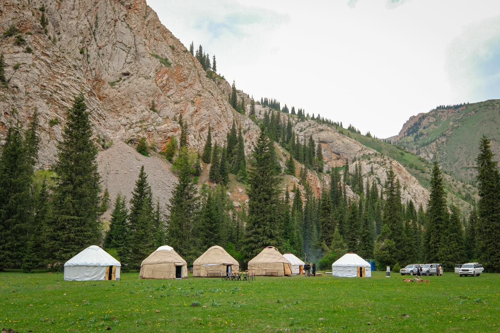
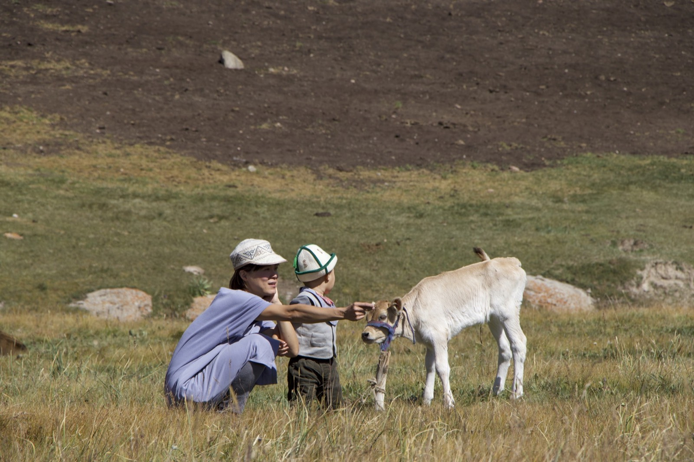
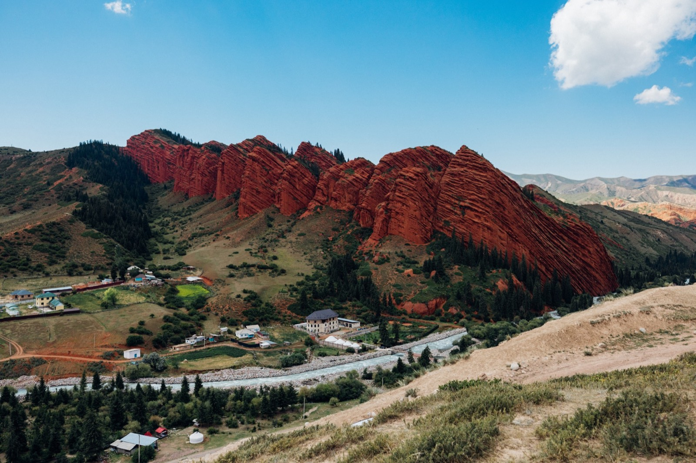
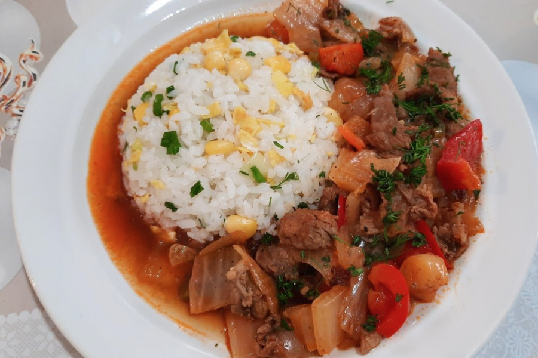
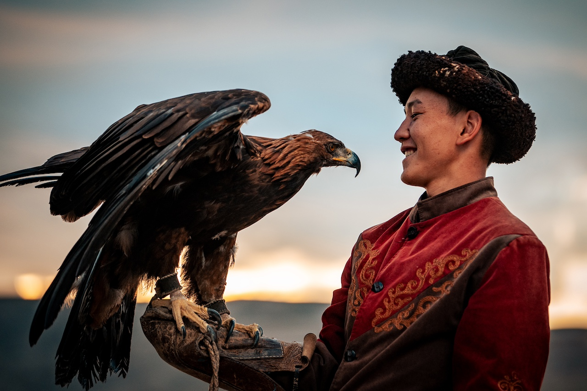
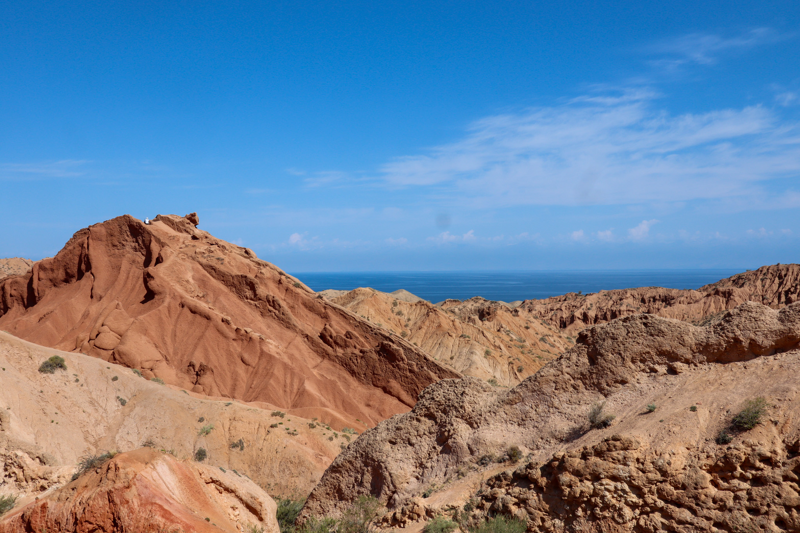
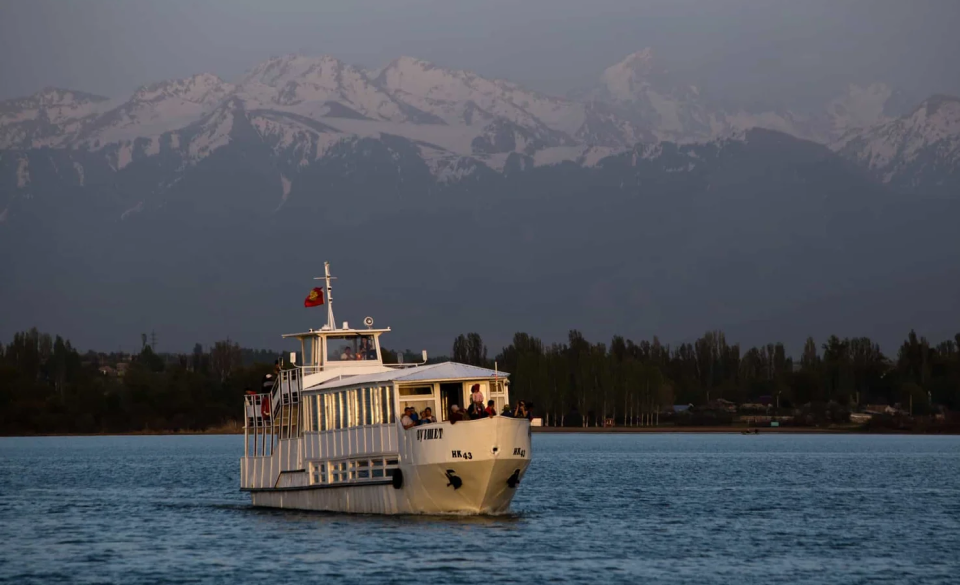

Three nights with a family
Stay in the family's yurt or wooden house in the mountains, far from roads and signal.
Milk the cows, make kaimak and boorsok, ride with the herders and soak in a natural hot spring, with an eagle hunter, Skazka Canyon, Jeti-Oguz and Karakol around it.
Most trips to Kyrgyzstan stop at a nomad family for tea. This one stays. For three nights, you live alongside a herding family in the mountains above the south shore of Issyk-Kul: milking in the morning, making kaimak, butter and boorsok, riding with the herders across the pastures, and washing the day away in a natural hot spring.
Around it, a loop of Issyk-Kul: Burana Tower and a golden eagle hunter on the way in, Skazka, the Fairy Tale Canyon, a ridge hike above Jeti-Oguz, and two nights in Karakol with a gorge hike and a cooking class with a Dungan family.

Stay in the family's yurt or wooden house in the mountains, far from roads and signal.

Help with the milking, make fresh cream and butter, and fry boorsok with the family.

Half a day on horseback across the pastures, at a calm pace suited to beginners.

Watch a berkutchi fly his golden eagle on the south shore of Issyk-Kul.

Skazka Canyon, a ridge hike above Jeti-Oguz, a natural hot spring and the Aksu springs.

Learn ashlyanfu and other Dungan dishes in a family home in Karakol.
Three nights with a nomad family is real life, not a show: simple conditions, early mornings and no signal. For the right traveller, it's the most memorable part of Kyrgyzstan.
Every traveller should read this personally, together with the full day-by-day itinerary.
3 nights with a nomad family, in their yurt or wooden house in the mountains. 1 night in a guesthouse in Bokonbaevo and 2 nights in a guesthouse in Karakol.
There's no shower for 3 nights with the family; you wash in a natural hot spring nearby. The toilet is a simple outdoor toilet, shared. Hot showers are waiting in Karakol on Day 5.
On the pasture there's no Wi-Fi and little or no phone signal. Charging may be limited to a small solar panel, so please bring power banks.
The family's day follows the animals and the weather. Plans are flexible: some days are busy, some are slow, and every family is a little different.
You eat what the family eats: bread, dairy, meat and noodles, and lots of tea. Tell us about any dietary needs (vegetarian, no lamb, allergies) when you book.
Summer days are warm, but mountain nights are cold, even in August. Bring warm layers, a hat and a sleeping liner.
No experience needed. On Day 4 you ride for about half a day with the family's herders, at a calm pace suited to beginners.
Take your shoes off in the yurt, ask before photographing people, and accept the tea. A few words of Kyrgyz, like rakhmat (thank you), go a long way.

Bishkek → Burana → Bokonbaevo
Your journey begins with a drive to Burana Tower, an 11th-century minaret standing alone in the Chuy Valley, surrounded by ancient stone figures called balbals. After lunch on the way, the road follows Issyk-Kul to its quiet southern shore. In the late afternoon, you meet a berkutchi, a golden eagle hunter, and watch his eagle fly in a hunting demonstration.

Bokonbaevo → Skazka → Barskoon → Nomad family
Start the morning with a swim or walk by Issyk-Kul. Then visit Skazka, the “Fairy Tale Canyon,” where wind and rain have shaped colorful rocks into castles and dragons. After a family lunch in Barskoon, you drive into the mountains to meet your nomad hosts. The afternoon is for settling in, getting to know the family, and watching the evening routine as the animals come home.
With the nomad family
Today you join the family's daily rhythm. In the morning, you help with milking, then learn to make kaimak (fresh cream) and butter, and cook boorsok, the fried bread served at every Kyrgyz table. Later, you go for a hike in the surrounding mountains, and end the day with a soak in a natural hot spring.
With the nomad family
Start the day slowly with tea at sunrise and some gentle stretching. Then ride with the family's herders for half a day across the pastures, at a calm pace suited to beginners. Back at home, you cook a meal together with the family, followed by a farewell evening.
Nomad family → Jeti-Oguz → Karakol
After breakfast, say goodbye to your hosts and drive to Jeti-Oguz for a hike on the red rock ridges above the valley, away from the usual tourist stop. After lunch in Karakol, relax at the Aksu hot spring, then check in to your guesthouse in Karakol for a proper shower and a comfortable bed.

Karakol Gorge and Karakol town
In the morning, you hike into Karakol Gorge through spruce forests along a mountain river, followed by a riverside lunch. In the afternoon, discover Karakol's mixed heritage: the wooden Holy Trinity Church, built by Russian settlers, and the Dungan Mosque, built without nails in the style of a Chinese temple. In the evening, you're welcomed into a Dungan family's home for a cooking class. Learn to make traditional dishes such as ashlyanfu, the cold noodle dish Karakol is known for, and hear how the Dungans came here from China in the 19th century and kept their language, food and customs alive. Dinner is the meal you've cooked together.

Karakol → Cholpon-Ata → Bishkek
On the drive back along Issyk-Kul, stop in Cholpon-Ata to see ancient petroglyphs carved into the boulders, or take a short boat trip on the lake. Later, enjoy a tea break with fresh kattama, a flaky layered bread, at a roadside family café. You arrive in Bishkek in the evening for dinner.
Questions about the family, the conditions or the dates? Write to us and we'll tell you honestly whether this trip is right for you.